-
2021年2月7日 新华网《三十而继——中新携手再出发》五集纪录片旨在回顾中国与新加坡两国关系三十年间的友好发展历程， 展现两国多年来在商贸、科技、教育及文化等方面取得的一系列合作成就，追溯历史，着眼当下，展望两国美好未来。
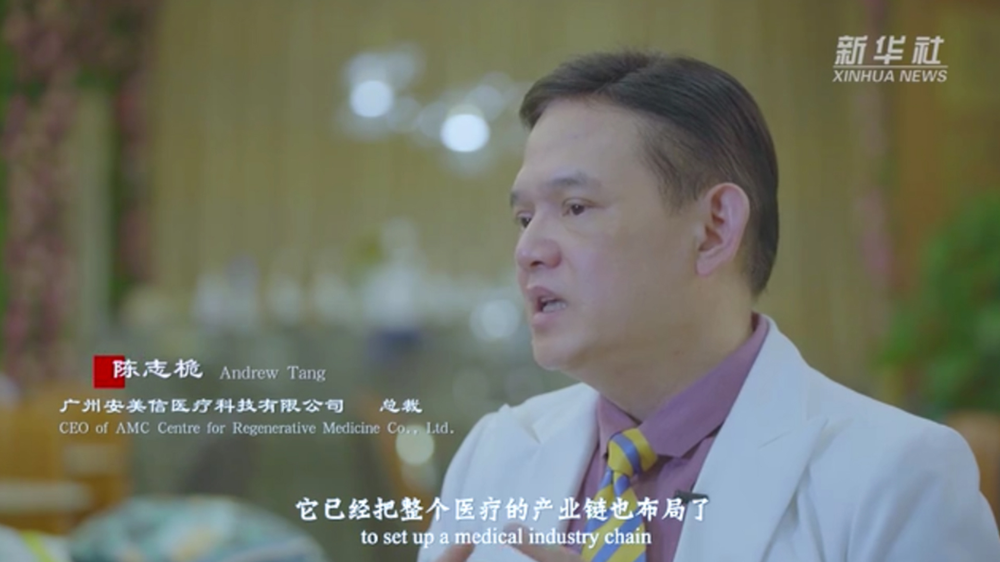第四集以中新政府跨国合作标志性项目——中新广州知识城为核心内容，阐述广州如何打造以知识引领、创新驱动为发展模式的国际未来城市样板， 依托战略新兴产业引进、科技创新研发以及高端人才培育为区域经济发展赋能。中新广州知识城发展的十年间（2010-2020），
瞄定“知识创造新高地、 国际人才自由港、湾区创新策源地、开放合作示范区”的国家战略定位，致力于打造一座产城融合、生态宜居一体化的活力新城。
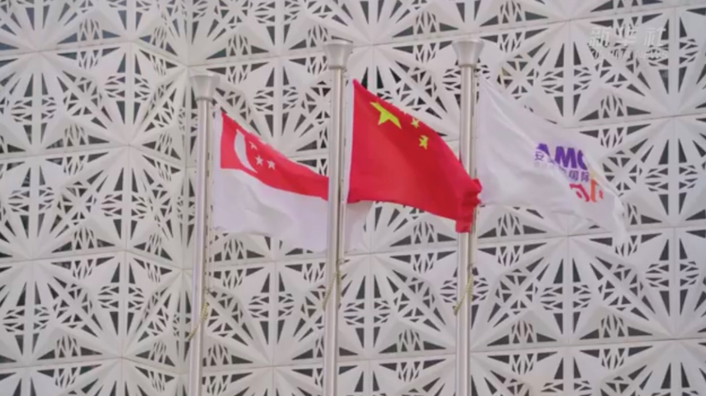他说，当时选择广州的主要原因是，当时知道两国政府希望在这两座山中间的风水宝地（广州）创造一个能够居住50-100万人口的城市，因为它靠近香港，靠近澳门，也是一个通往国际的非常好的跳板。
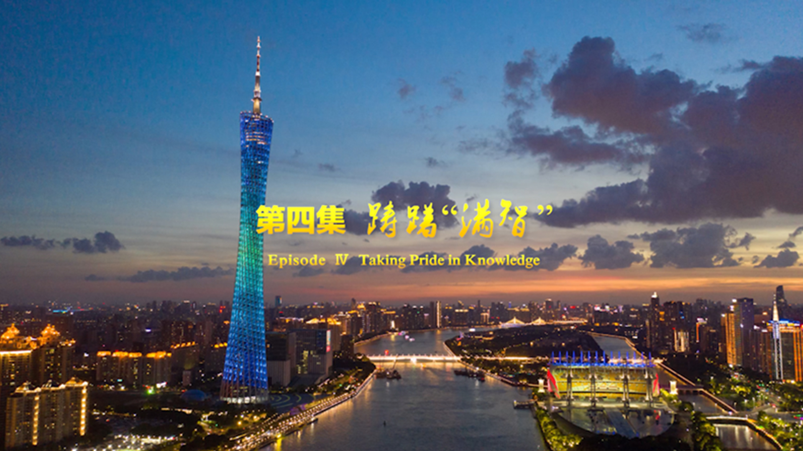广州的包容性比较强，在这里能找到团队理念一致的团队，我们的目的是要创造一个百年医疗品牌。 知识城在医疗这块出的努力，在吸引全球各地的医疗研发这块机构来这里，把中国甚至亚太的总部设置在这里。
纪录片【三十而继】-总裁陈志桅先生接受新华社专访，国际频道播放
-
2018年12月6日，一场横扫精准医疗界的飓风袭来，新加坡安美信国际精准再生医疗在万众期待中于中新广州知识城腾飞园正式开幕，开启中国精准医疗的新里程。
时任新加坡卫生部部长王乙康先生（曾历任新加坡教育部长、新加坡交通部长）及20余名新加坡相关政要贵宾莅临安美信开幕典礼。
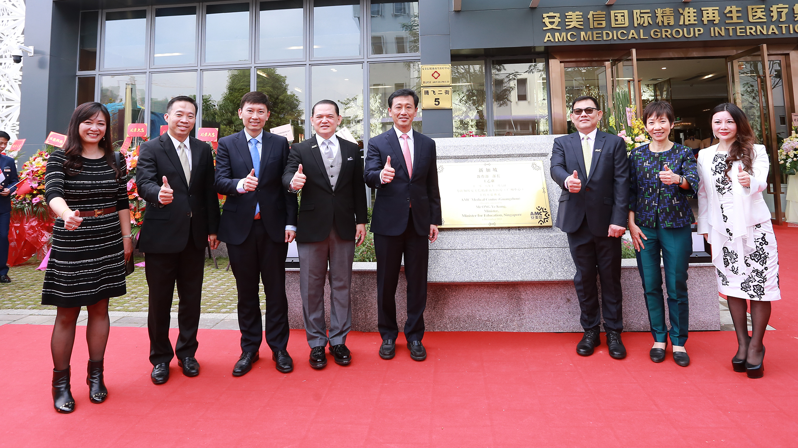时任新加坡卫生部部长王乙康先生对安美信表示祝贺并致辞，现场对安美信为精准医疗做出的杰出贡献以及推动新加坡对外发展做出的努力给予高度认可和赞赏， 并指出安美信作为精准医疗领域的新秀和推动者，该次开幕典礼有十分重要的意义，希望未来会有更多的人在这里获得健康。
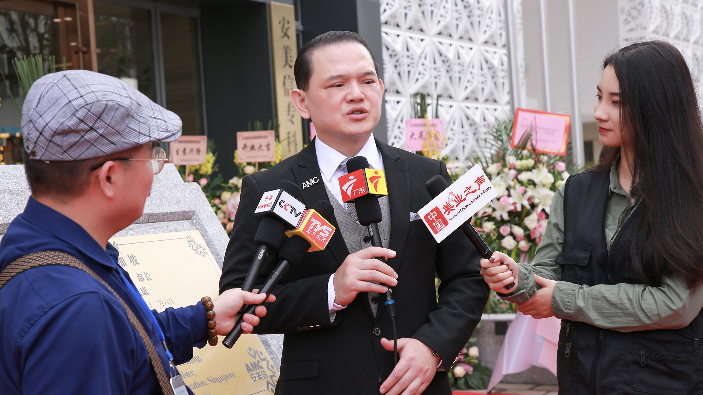现场，中国中央电视台CCTV、今日头条、南方卫视、广东电视台、搜狐、中国美业之声、凤凰卫视等20多家媒体团全程跟踪拍摄、报道、采访， 一起为新加坡安美信国际精准再生医疗开幕典礼助力。
精准再生 • 使命起航。新加坡安美信国际精准再生医疗（中国）总部启动，见证着医疗高端与国际视野，未来相信更多人在此获得健康与美丽。
-
2018年
时任新加坡卫生部部长王乙康先生（曾历任新加坡教育部长、新加坡交通部长） 莅临新加坡安美信国际精准再生医疗，并做揭幕仪式
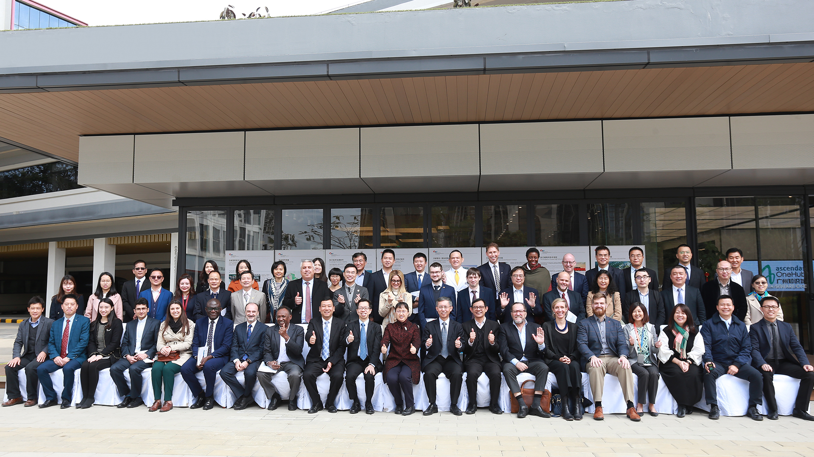 -
2020年
美国、英国、意大利、法国、德国、巴西、新加坡、越南、马来西亚、日本、南非等 28个国家领事馆总领事莅临访问新加坡安美信国际精准再生医疗新加坡安美信国际精准再生医疗总裁陈志桅先生作为广东-新加坡第七次理事会新方企业家， 成为中新广州知识城唯一一个企业代表出席本次28国领事馆国家级别交流会。
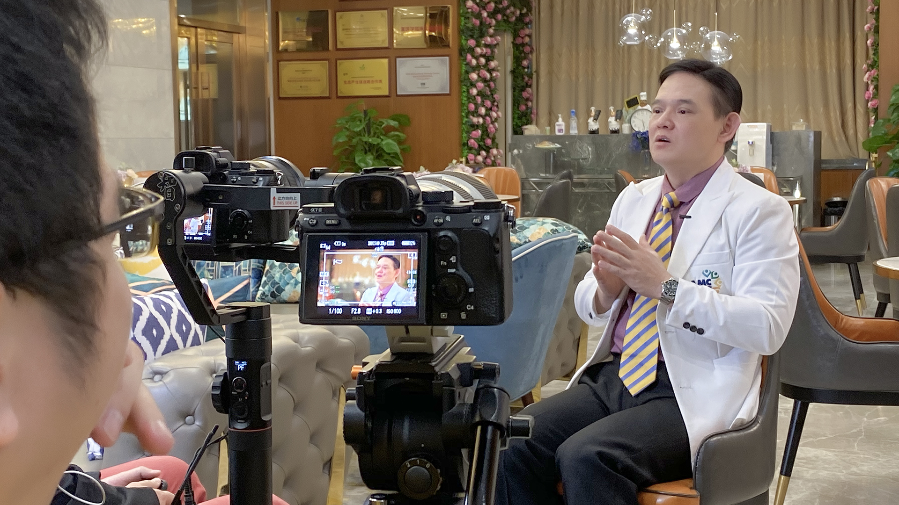 -
2020年
新华社新华网莅临新加坡安美信国际精准再生医疗并采访总裁陈志桅先生新加坡安美信精准医疗作为广州知识城新加坡医疗企业代表，在中新建交30周年的携手同行中， 安美信总裁陈志桅先生作为代表，受邀参与新华社新华网特别专题采访 与专题纪录片《三十而继》录制。
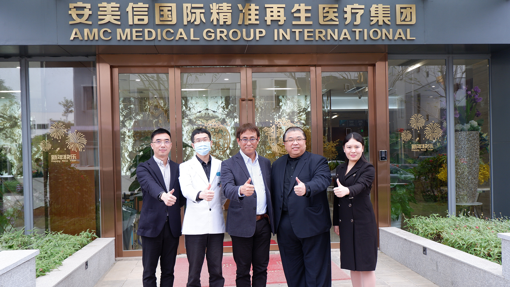 -
2021年
日本福冈市驻派广州官员 奥田圣先生广州市市委办亚非处副处长 吕伟先生
莅临新加坡安美信精准再生医疗参观及访问，安美信精准医疗作为参观广州医疗为代表的单位
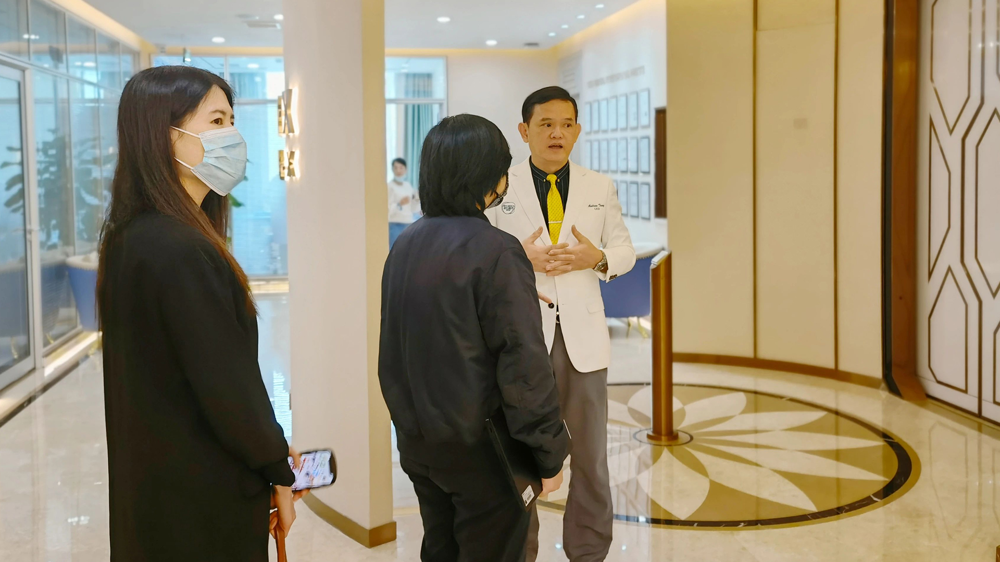 -
2021年
新加坡经济发展局驻中国司华南区主任招诗玲女士参观及访问新加坡安美信国际精准再生医疗
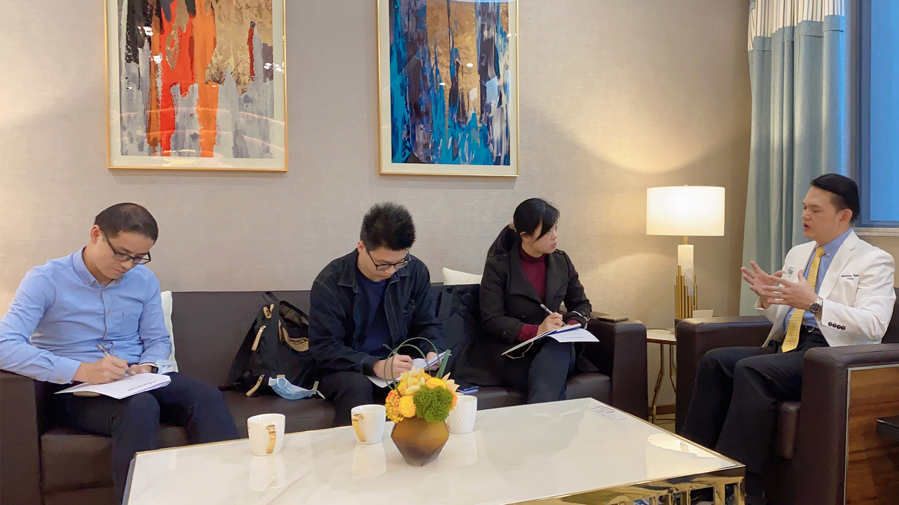 -
2021年
南方新闻网记者及粤港澳大湾区记者莅临新加坡安美信国际精准再生医疗并访问总裁陈志桅先生
-
2018年与WWF世界自然基金会达成战略合作伙伴关系
新加坡安美信国际精准再生医疗与WWF、一个地球OPF、腾讯公益共同助力江豚活动，一起参与环境保护。
*WWF世界自然基金会是世界最大的、经验最丰富的独立性非政府环境保护机构
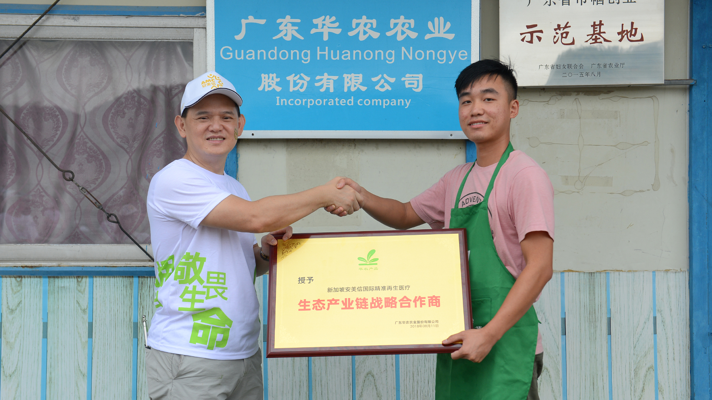 -
2018年与华农股份建立生态产业链战略合作伙伴关系
安美信与华农建立生态合作，精选无土水培质蔬菜，属于宇航员太空级别，保证蔬菜无农药无化肥无添加无激素 ，新鲜、安全、优质，让每一位顾客吃的健康，吃的安心。
*华农有机无土水培基地是不仅是广东最大，更是国内最大的智能化水培蔬菜和智能化植物工厂，承担国家重大研发项目。
新加坡安美信国际精准再生医疗源于对太太群体的尊重，对已婚女性的生活品质与精神追求的关注，为了让更多人 享受高品质健康生活，2019年与环球太太大赛组织结缘，并在双方的积极推动下顺利合作，安美信一举拿下2019年 第42届环球太太大赛中国上海市 • 广东省 • 福建省赛区总冠名。本次赛事活动受到广东电视台、腾讯、新浪、网易、 搜狐、CCTV央视证券频道等国内多家主流媒体关注和报道。
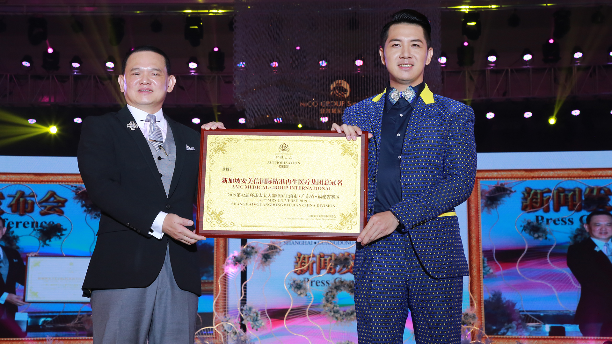2019年与环球太太大赛合作
荣获2019年第42届环球太太大赛中国上海市 • 广东省 • 福建省赛区总冠名
-
*环球太太大赛与世界小姐、环球小姐并称“世界三大选美赛事”，选手涉及政要、明星、名媛，各个产业的名流太太， 是目前最具有权威的太太级全球赛事。
-
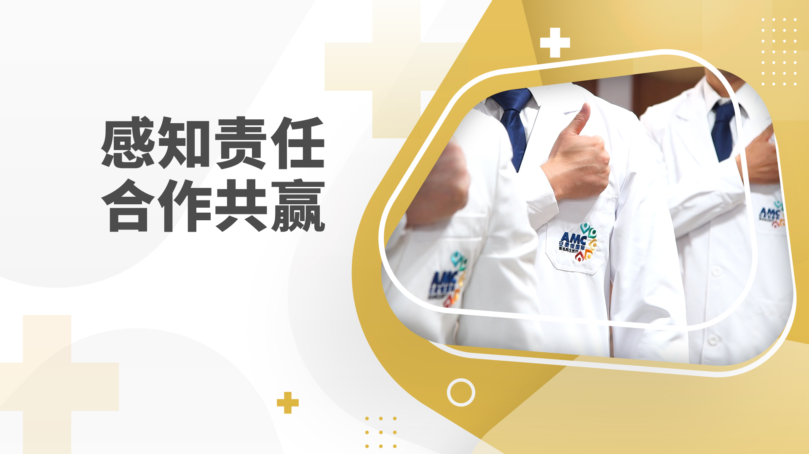
安美信，感知责任、合作共赢！
 院内参观
院内参观 四大项目链
四大项目链 开幕典礼
开幕典礼 精准医疗
精准医疗